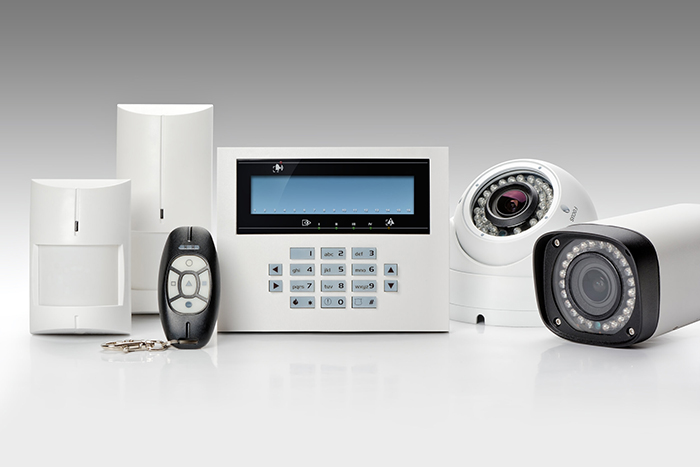
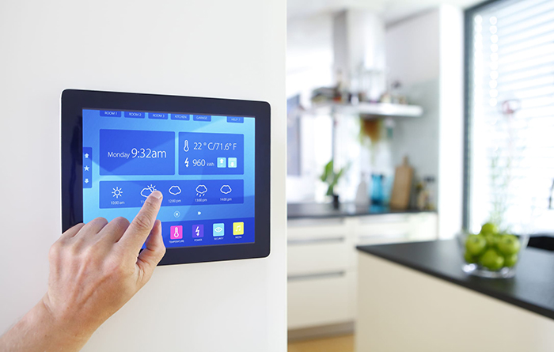

Software Development & Consultancy
What can we help you with?
custom web application
custom desktop application
custom mobile application
one page web application
customer portal
information system
automation of business processes
interconnection of 3rd party services
e-commerce
QA & automated tests
API
And much more
Product development is not just programming for us. We will help you properly examine the design and closely connect the website or application to your business. We always put your business goals first. We are looking for long-term cooperation and we are not afraid to take over the work of someone else.
We specialise in custom software development. We are happy to become your development partner from the beginning to the end of your project. We can also offer our co-development teams. If you are just considering your idea, we can offer project analysis and architecture design.
Our Software Products:
+ Time & Attendance Software
+ Lobby/Visitor Management Software
+ Cafeteria Management Software
+ Card Printing / Badging Software
+ Emergency Evacuation Software
+ Time & Attendance Software
CCTV
The Fusion Masters having excellent professional engineers, designers and technical team to manage enterprise level of surveillance projects
Our team is specialized in.
· Consultancy, design, planning and installation
· Value Engineering
· Storage & bandwidth planning and configuration
· Central Monitoring System (CMS) with multi-site integration & Remote monitoring.
· Intelligent Video Analytics
· ANPR, POS, Alarm, Intelligent Detections like Tripwire, Perimeter, Loitering, Crowd, Parking, Missing Object, Foreign Object, Face and many other analytical solutions.
· Exclusive distributors and partners of many international brands.
· Cameras, Recorders, Control room & video wall products
· FEW IP CAMERA / Surveillance
· Encoders, Decoders, Extenders, Converts, Cables & Accessories
Access Control System
TFM is an official distributor of Virdi, a very professional brand from South Korea, being a manufacturer specialized in finger print, Face, Iris & Card Solutions. We provide end to end solutions for time& attendance and access control, ID management, physical security and homeland nation registration and verification solutions. As a solution provider, we design and install advanced access controls with the perfect combination of biometrics, RF ID, Mifare, HID, with-unmatched system
As we partnered with leading suppliers of access control systems from South Korea, to provide the best solutions for customers based on quality & stability. Being part of access control systems, we have supplied & installed gate barrier solutions, turnstile & tripod systems for various sectors based on the project requirements & specifications. We design the project solutions for entry & exit controls using the turnstiles, parking barrier with the combination of the card, finger, face and iris technologies.
Fire Alarm
Between a smoke detector and the security of a monitored fire alarm system lies a world of difference. It could be the difference between the life and death of your business—43%* of those that experience a fire never reopen because the damage and downtime is too extensive.
We service and inspect all brands of fire alarm systems and install systems from a range of high-quality manufacturers. Our technicians are consistently up to date through steady training in the evolving technology behind the systems. Our team of technicians has extensive training and credentials, including NICET-certification, and they’re experienced in inspecting, installing, and servicing fire alarm systems.
When you choose TFM to install a fire alarm system or to inspect, service, or upgrade a current system, you get the strength of a team that’s known for being professional and reliable. Would you want anything less when it comes to the safety and security of lives and property? Talk to us today to make your business safer.
Queue Management
TFM's customer experience solutions are based on the Wavesphere Philosophy – ORGANIZE, ENGAGE & MEASURE waiting times and statistics from disconnected service areas to enhance customer experience at key touch points.
Excessive queuing and waiting are among the leading causes of consumer dissatisfaction in banks, retail stores, hospitals and government institutions & Wavetec’s queuing systems solve that problem.

Intrusion Alarm
Security alarm systems are often the first line of defense against property crime, potential fatalities, severe injuries, crushing expenses. We have expertise in installation of GSM, wired & wireless alarm system designed for domestic, commercial and office application. The devices offered by us are user friendly & we assist in can be programing the same on basis of the site requirements.
We are approved supplier & installer for alarm systems by local security authority, and abide by jurisdiction’s training, education, & certification requirements. We have completed many successful installations in the region.

Home Automation
• Heating, Ventilation & Air condition
• Lighting control system
• Access controls
• Gas & smoke detectors
• Swimming pool alarm systems
• Smart glass & curtain controls
• Home appliance controls Video
• surveillance systems Intrusion &
• alarm systems Assistance for elderly &
• disabled Audio &
• video systems Temperature controls
• Multiple gang smart switch for lighting control Smart socket for household appliance control Curtain control switch
• Universal ir remote controller Dimmer switch for fan, light etc. RGB light control
• Scene Controller Environment Music System
• VOIP phone integrated
• Television set Access Controls CCTV

Building Management
At the core of a Building management system is a Smart Structure server device, such as AS-B. AS-B performs key functionality, such as control logic, trend logging, and alarm supervision, provides builtin I/O, and supports communication and connectivity to the field buses. The distributed intelligence of the EcoStruxure Building ensures fault tolerance in the system and provides a fully featured user interface through WorkStation and WebStation.

Audio Visual Solution
A quality driven technology-based company and in compliance with the International Quality standards, committed to over the nest technology based, and professional project designs & management followed by the technical support from qualified technical team.
We are a reputable dynamic company and staffed by professionals with hands on experience in eld of Audio Visual. The main eld of expertise being in AUDIO VISUAL SOLUTIONS- Professional Audio, Video & Conference System, PA & BGM SYSTEM, Laser & Digital Projection, Smart Classroom Solutions, Smart Board Room & Meeting Room Solutions, Auditorium Solutions Theatre & Home Cinema, Acoustic Paneling, LED Video Walls (Indoor & Outdoor), Digital Signage’s & Kiosk System. Our installation standards and criteria for election of personnel form part of our strictly monitored and controlled quality system. We design the system as per client requirements and budget. We have successfully completed several projects using today’s technologies.
Our company comprises of the team of highly trained technicians that provide 24 x 7 breakdown services. Our team of technicians & engineers are well qualified and certified by the local law enforcement agencies, so the project & product selection is in accordance with the local law & compliance with the set standards. Apart from it, the technical team are trained regularly for in pace
Cabling
Our range of steel and composite cable service enables us to provide a solution for both indoor and outdoor applications.
Our Service can be used for all types of cables such as Data/Network cabling right up to LV power cables.
Wifi & IP Telephony
We are the pioneers in the field of ‘Secured Wi-Fi Management Solutions', offering related software solutions, especially for premier hotels & medium ISPs. Hotspot sharing is widely used in Airports, Hotels & Clubs, Corporate networks and Branded chains of cafes, for their visitor Internet access management, quality and commitments and are responding with lively replies till now.
Key Benefits
·Quick and simple installation
·Optional Roaming in-between hotspot locations
·No additional manpower or software or hardware for a full-edged billing solution
·Freedom to manage your Wi-Fi business including complementary services
Any number of Pre-paid or Post-Paid Tariff Plans to satisfy customers
·Tariff plans based on Time or Volume or Speed
·True Plug & Play No client configuration whatsoever on the client laptops
·Log of Users/Usage Superb control over users and usage
·LINUX based platform strengthens reliability
Ideal Solution for:
Labor Camps, Educational Institutes, Hospitality, Wi-Fi Café, Residential Building, Enterprise, Exhibitions, and many more
Solar System
Bespoke structure to help expedite solarization in Pakistan . ”We Invest, You Save” initiative is a win win for businesses aspiring to save the environment by funding small solar power plants for businesses in the country.